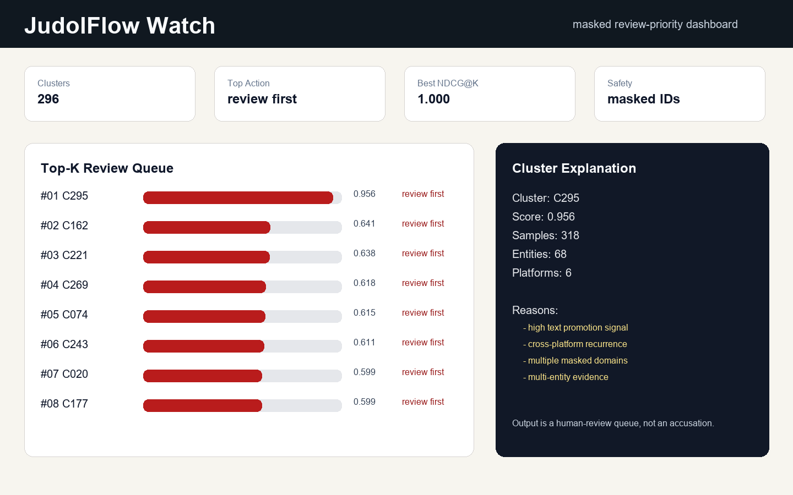

JudolFlow Watch
Static preview of the masked review-priority dashboard. Run the Streamlit app for interactive filtering.

Static preview of the masked review-priority dashboard. Run the Streamlit app for interactive filtering.
